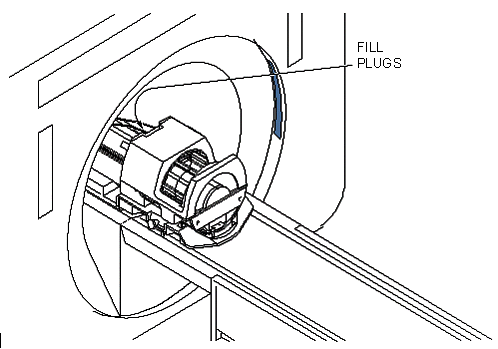

Operating Documentation
Direction 5440001-3, Rev# 6
Signa HDxt Service Methods
Module Version 1.0, Version Date 5/3/07
Operating Documentation |
| Required Persons | Preliminary Reqs | Procedure | Finalization |
|---|---|---|---|
| 1 | Not Applicable | 1 hour | Not Applicable |
In this procedure, the strength of the gradient fields are calibrated by modifying the control variables cfxfull, cfyfull, and cfzfull. A separate scan will be taken to calibrate each of the three gradient fields (x, y, and z).
| NOTE: | This procedure must be performed prior to Grafidy and Main Shimming calibrations. |
| Last Update | 09/30/2004 |
| Item | Qty | Effectivity | Part# | Manufacturer | |
|---|---|---|---|---|---|
| ||||
| POISON HAZARD! | ||||
| 1.0T and 1.5T PHANTOMs CONTAINS NICKEL, A SUSPECT CARCINOGEN. DO NOT INGEST. | ||||
| DISPOSE OF AS A HAZARDOUS WASTE ACCORDING TO STATE AND FEDERAL REGULATIONS. |
| ||||
| POISON HAZARD! | ||||
| 3.0T PHANTOMs CONTAINS Silicon Oil, DO NOT INGEST. | ||||
| DISPOSE OF AS A HAZARDOUS WASTE ACCORDING TO STATE AND FEDERAL REGULATIONS. |
Place the DQA phantom in the head coil. Position it with the fill plugs up, and toward the rear of the magnet (see Illustration 1).
Illustration 1: DQA PHANTOM POSITIONING

At the keypad on the front magnet enclosure, press <LANDMARK> then <MOVE TO SCAN>.
| NOTE: | Do not rotate or skew the phantom in the head coil. This will cause errors in the analysis of Gradient Calibration. Landmark errors can also cause errors in the analysis. |
Click on [Autoview], just below the Autoview image display screen. Your scanned images will be displayed automatically
All three plans must be scanned and analyzed in order to complete this process. To Start the process you must first start the Gradcal tool. See Gradient Calibration Image Analysis
Perform a test scan to insure the system is running properly.
Remove and put away phantoms used during this procedure.